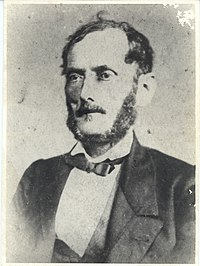

hercule lorence
Antoine Hercule Romuald Florence, conhecido como Hercule Florence ou Hércules Florence, (Nice, 29 de fevereiro de 1804 — Campinas, 27 de março de 1879), foi um inventor, desenhista, polígrafo e pioneiro da fotografia suíço-brasileiro. A ele é creditada a invenção independente da fotografia no Brasil, três anos antes de Louis Daguerre mas seis anos após Nicéphore Niépce, e a criação do termo photographie em 1834, alguns anos antes de John Herschel cunhar independentemente o termo photography. Biografia Desde pequeno Hércules Florence demonstrou possuir notável talento para o desenho. Ao ler Robinson Crusoé, de Daniel Defoe, apaixonou-se pela vida no mar. Em 1820, com apenas 16 anos, obteve a autorização de sua mãe[1] e tornou-se grumete. Sua primeira parada marítima foi o grande porto belga de Antuérpia, onde, desafortunadamente, foi assaltado e espoliado de seus principais bens e dinheiro. O então aventureiro fez uma viagem praticamente a pé até o principado francês de Mônaco, passando por uma breve estada na Holanda.[1] Sua desdita no porto belga não o desanimou e, em 1º de maio de 1824, após renovar seu passaporte, chegou ao Brasil a bordo da fragata Maria Thereza, aportando no Rio de Janeiro. A fragata ficou estacionada um mês e seguiu seu trajeto, porém sem o jovem Florence, que se fixaria no Brasil por toda a vida. Em princípio, o então jovem viajante, sem falar o idioma local, obteve emprego, inicialmente, como caixeiro numa casa de roupas, transferindo-se, logo a seguir, para o estabelecimento de outro francês, Pierre Plancher, proprietário de uma livraria e uma tipografia. A vida do pesquisador estava prestes a mudar quando, por meio de um anúncio, chegou ao seu conhecimento que uma expedição científica tinha muita demanda para desenhistas em seus quadros para que estes fizessem a documentação e relato ilustrado da viagem, que seguiria pelos rincões mais afastados do norte do Brasil.[1] A expedição Langsdorff Ver artigo principal: Expedição Langsdorff Trajeto da expedição. Ilustração de Hercule Florence de 1827 Um ano depois, Florence ficou fascinado com a perspectiva de realizar uma viagem pelo interior do Brasil. Sua grande aventura teve início quando foi informado de que um naturalista alemão, o Barão Georg Heinrich von Langsdorff, pretendia empreender uma expedição científica por várias províncias do país, incluindo a Amazônia, e necessitava de um desenhista. Florence conseguiu ser admitido no cargo pelo seu talento artístico e pelos seus conhecimentos de cartografia. Juntamente com Aimé-Adrien Taunay completou a dupla de desenhistas incumbida de realizar a documentação iconográfica ao longo do extenso trajeto da expedição. Deve-se a Florence o relato completo dessa aventura, percorrida ao longo de 13.000 quilômetros entre os anos de 1825 a 1829, assim como a maior parte da documentação iconográfica. Para além dos relatos documentais da jornada, foi nesta expedição, que transformaria a vida pessoal e acadêmica de Florence, que o pesquisador formatou e deu vida, posteriormente, às suas revolucionárias invenções sonoras conhecidas na atualidade como zoophonie ou zoophonologie, com apontamentos de comunicação regular entre animais de uma mesma espécie.[1] Nela se percebe sua preocupação em registrar com rigor científico a natureza e os índios das regiões visitadas. Essa coleção de imagens é de valor inestimável para os estudos antropológicos e etnográficos, conforme é atestado por cientistas brasileiros e estrangeiros. Após seu retorno da expedição, contraiu núpcias com Maria Angélica A. M. Vasconcelos, filha de importante político paulista, fixando residência na pacata vila de São Carlos (atual Campinas), um dos polos culturais mais importantes do Estado de São Paulo. Florence havia conhecido sua futura esposa dias antes da partida da viagem que mudaria a sua vida, na cidade de Porto Feliz, situada na região de Itu e Sorocaba.[1] Com Maria Angélica teve:[2]
